速览
游戏到底由哪些职种做出来？这对做游戏的人很基础，但谁一开始都不知道。樱井先说明：因类型和表现而差异很大，以下是他做游戏时常见的职种。总监（Director）：基本每队一人，出点子、汇总、几乎决定一切，监修和调整游戏中的一切，也叫游戏设计师。策划（Planner）：把总监想的东西做成设计图（规格书）分发给其他职种，规格书为写程序有更细的描述；职责广泛，几乎涉及所有游戏内容，也做平衡调整、调试指挥，还写脚本。程序（Programmer）：把规格书上的企划落实到电脑上让游戏运转；其他职种做的素材都汇集到程序这里完成；电脑很讲道理，需要耐心和弹性。模型（3D 建模美术）：用图形工具做多边形形状，有角色、斗士、场景、背景、敌人、道具等，人多且各自工作性质完全不同。原画（Artwork）：画斗士插画等 2D 图，所需才能与模型完全不同，但也有人两者都做，界线模糊。动作（Motion）：做模型的动画，不只要真实，还要适当夸张、张弛、摆姿势、符合游戏目的的动法，人数也较多；另有做骨骼绑定（rig）的人。特效（Effect）：冲刺烟、命中标记、斩击风切、火焰、电击、全屏演出等，需要与其他美术不同的动画感。声音：大致分为音乐、音效、配音（录制声优并编辑加工）。UI：构成菜单，内部也混有策划、美术、程序，但要做的事与其他团队很不一样。技术支援：管理服务器、整备开发环境、出问题时解决，不直接做产品内容但不可或缺。管理（Manager）：日程管理、找出延误原因改善、调配人员、维护公司规则、采购器材、管理办公室等。监测（Play Tester）：测试游戏、指出问题和需要调整的地方，实际调整由策划斟酌后进行；对战游戏需要相应的实力和一直玩下去的毅力。调试（Debugger）：同样大量游玩，但目的是找 bug，连同复现方法报告，由管理系人员分配给合适团队并管理到修复。另有实机影片的拍摄人员，《大乱斗 SP》的参战影片游戏部分由团队内成员拍摄。宣传、营业、制作人业务不算「团队内」，此处省略；实际还按角色组、场景组等分队。团队由各种职种组成，例如「斗士团队」就混合了策划、程序、模型、原画、动作、特效、音效；总监几乎属于所有团队。各项工作经过总监监修、多次调整，才达到产品水平。各职种需要相互配合，没有相互理解就转不起来：好好共享目的与达成标准，协力推进。
1. 开场 0:04
游戏到底由哪些职种做出来？这对做游戏的人来说非常基础、日常，但谁一开始都不知道。
樱井先声明：根据所做游戏的类型和表现，差异会很大。以下是他做游戏时常见的职种。
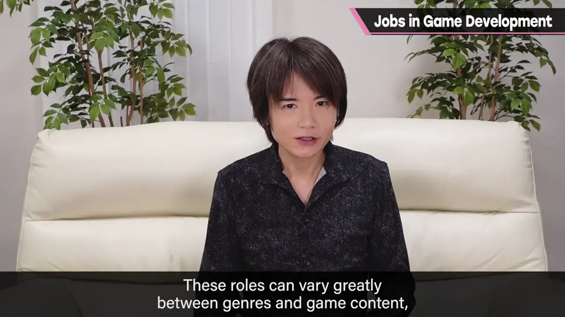
2. 总监与策划 0:30
总监（Director）——就是樱井自己。其他体制他不清楚，但基本上一个团队只有一人：出游戏的点子、汇总，几乎决定一切的「导演」，监修和调整游戏中的方方面面。因为构思、创造游戏，也被称为游戏设计师。
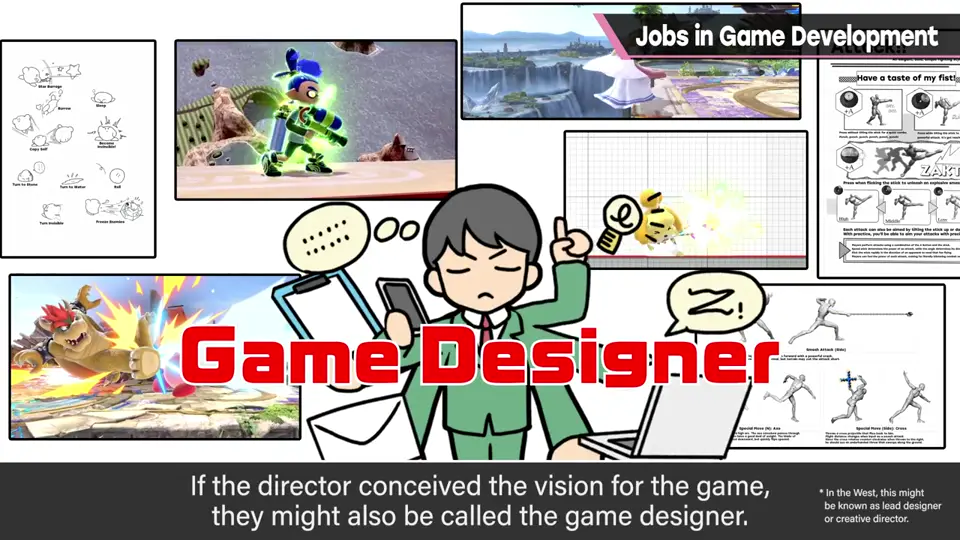
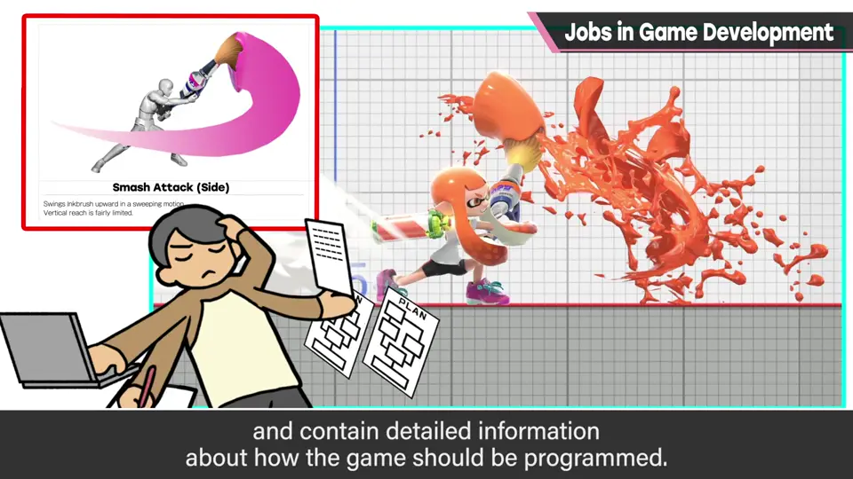
策划（Planner）：把总监构想的东西做成设计图，分发给其他职种。设计图叫规格书，为了编程会写得更细。策划的职责很广，几乎涉及所有游戏内容：平衡调整、调试的指挥，也会写程序以外的数据——脚本。
3. 程序 1:25
程序（Programmer）：写电脑运行的程序，把规格书上的企划落实到电脑里，让它作为游戏运转起来。
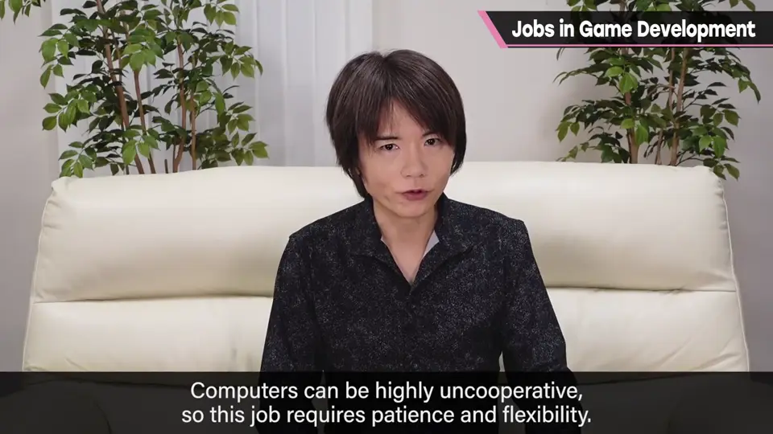
4. 美术：模型、原画、动作、特效 1:55
模型（本应叫 3D 建模美术）：用图形工具做多边形等形状的人。「模型」一词包含很多种：角色或斗士、场景、背景、敌人、道具……所以人很多，各自工作的性质也完全不同。
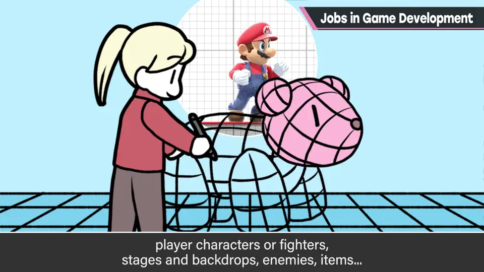
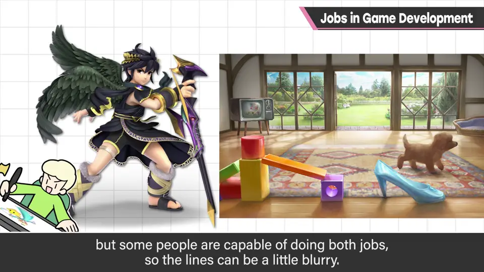
原画（Artwork）：画斗士插画等 2D 图的人。需要的才能和模型完全不同，但也有人两者都做，界线很模糊。
动作（Motion）：做模型的动作与动画。不只是表现得真实就好，还要有适当的夸张、张弛、摆姿势，以及符合游戏目的的动法。视类型而定，人数也偏多；另外还有做「rig」（让角色动起来的骨架结构）的人。
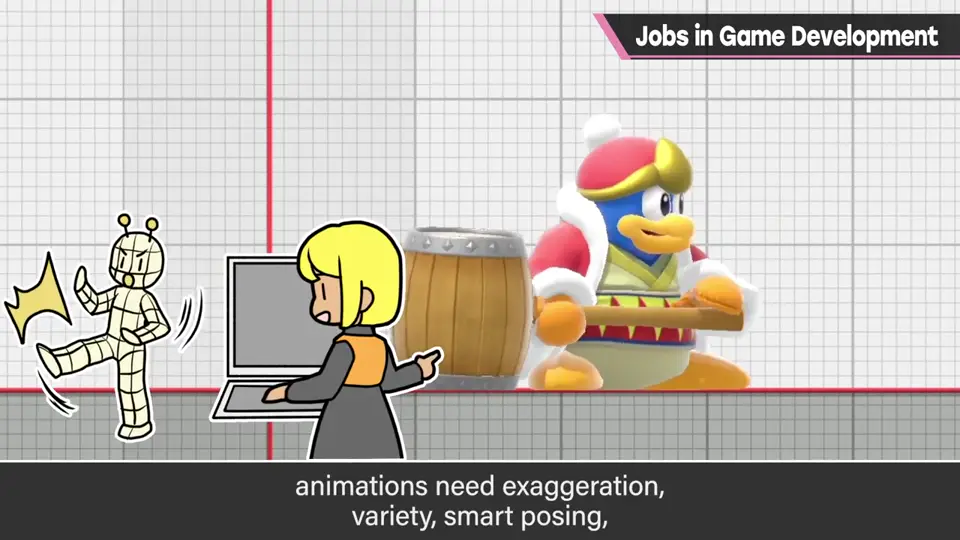
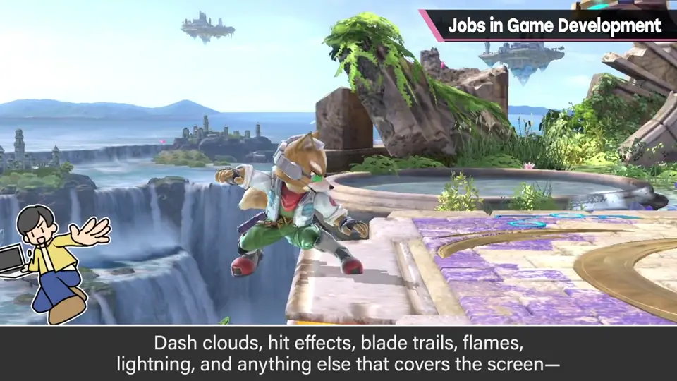
特效（Effect）：负责画面效果，如冲刺烟、命中标记、斩击风切、火焰、电击，以及整个画面的特殊演出，给予刺激和「像那么回事」的感觉。需要与其他美术略有不同的动画感。
5. 声音与 UI 3:33
声音：大致分为音乐、音效、配音。音乐负责游戏背景播放的曲子；音效做攻击命中声、脚步声、环境声等随状况播放的声音；配音负责邀请声优录音，并编辑加工。
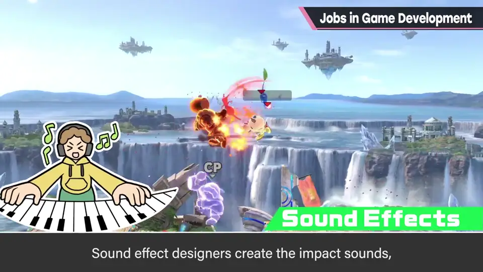
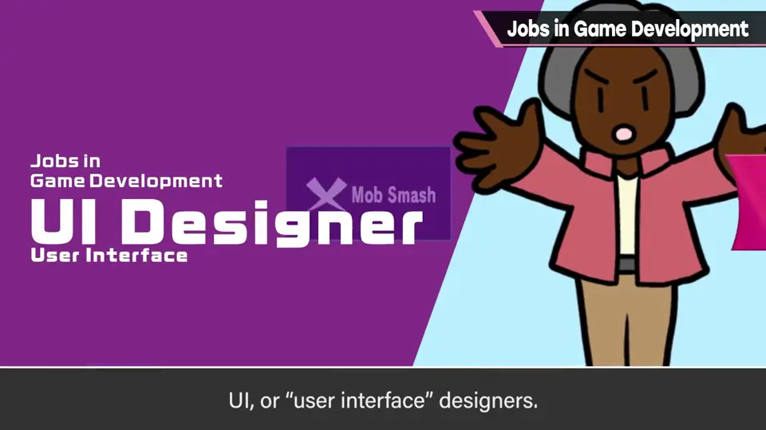
UI（用户界面）：构成所谓菜单。其中也混有策划、美术和程序，但要做的事与其他团队相当不同。
6. 技术支援与管理 4:18
技术支援：管理服务器、整备开发环境、出问题时出面解决等技术支持。不直接做进产品的东西，但不可或缺。
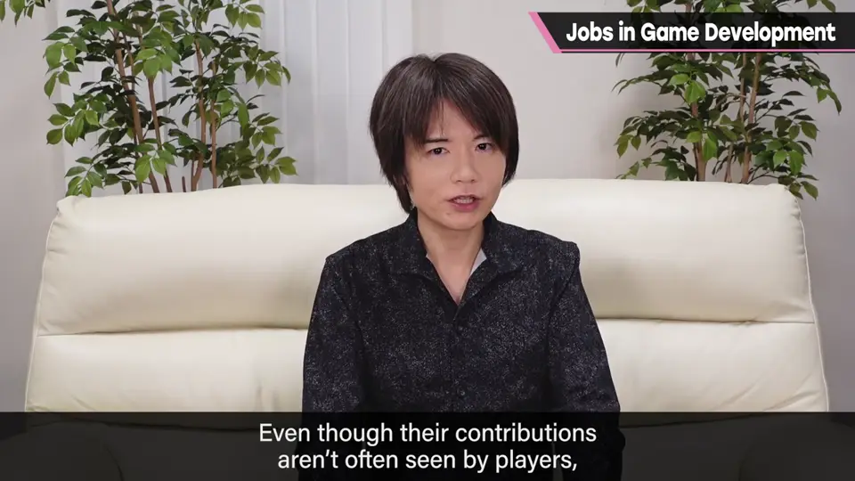
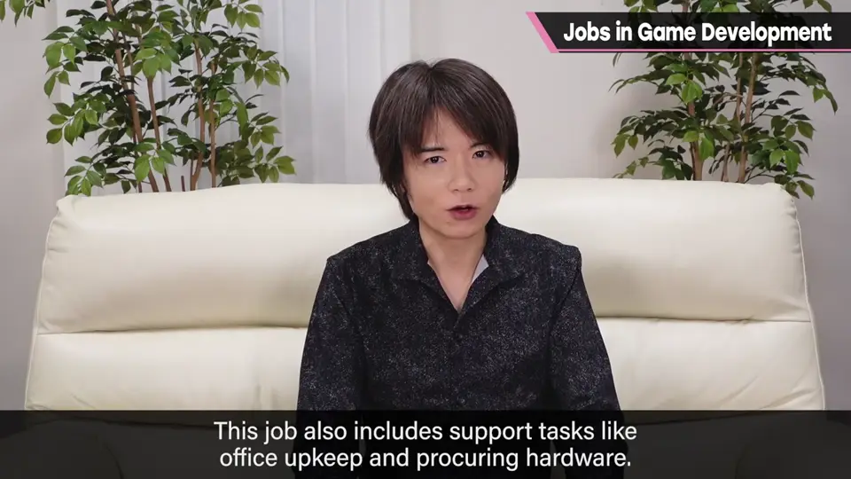
管理（Manager）：做团队运营所需的事：日程管理、找出延误原因并改善、调整人员配置、让大家遵守公司内规则；采购器材、管理办公室等支援业务也是管理类的工作。
7. 监测、调试与实机影片 4:57
监测（Play Tester）：测试游戏，指出问题点和该调整之处；实际调整由策划斟酌内容后进行。尤其是对战游戏，需要相应的实力和一直玩下去的毅力。
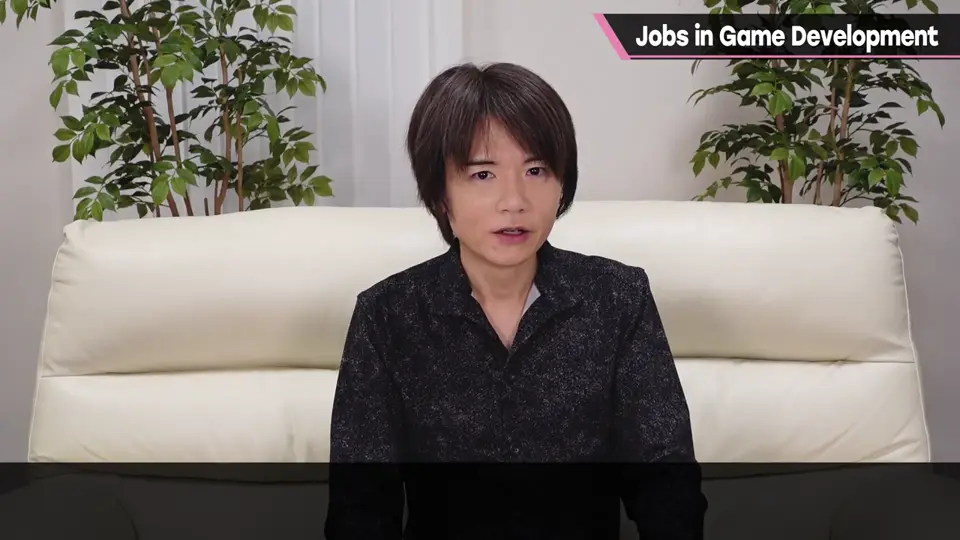
调试（Debugger）：和监测一样大量游玩，但目的是找 bug。找到问题后连同复现方法一起报告，由管理系人员分配给合适的团队，并管理到修好为止。
此外还有拍摄参战影片等的实机影片人员。特别是游戏部分的拍摄由团队内成员负责，樱井认为《大乱斗 SP》做出了非常高水准的影片。
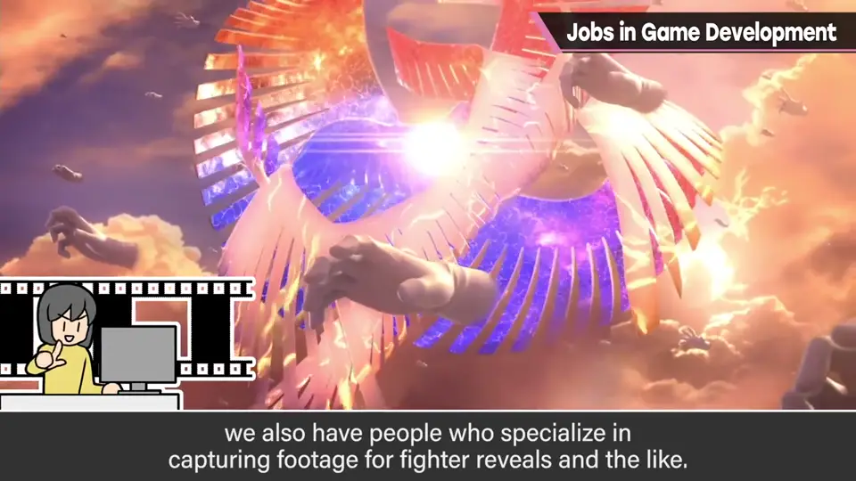
8. 团队是多职种的混合 5:56
宣传、营业、制作人业务等也存在，但算不算「团队内」不好说，这次省略。实际上还会按角色组、场景组等分类组队，这里只聚焦于职种。
团队由各种职种汇集而成。比如「斗士团队」，就混合了策划、程序、模型、原画、动作、特效、音效等很多职种；总监当然几乎属于所有团队。
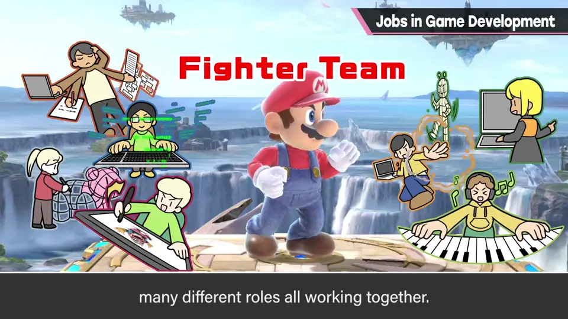
每项工作都要经过总监的监修，多数要反复调整，才达到产品水准。
自测题
1. 总监和策划的分工有何不同？
总监出点子、汇总并几乎决定一切；策划把总监的构想写成规格书分发给各职种，并做平衡、调试指挥、写脚本等。 0:30
2. 为什么说素材都汇集到程序这里？
程序把规格书落实为可运行的游戏，其他职种做的素材都在这里组合完成。 1:25
3. 监测（Play Tester）和调试（Debugger）有什么区别？
监测找问题和需调整处（调整由策划进行）；调试专门找 bug 并附复现方法报告。 4:57